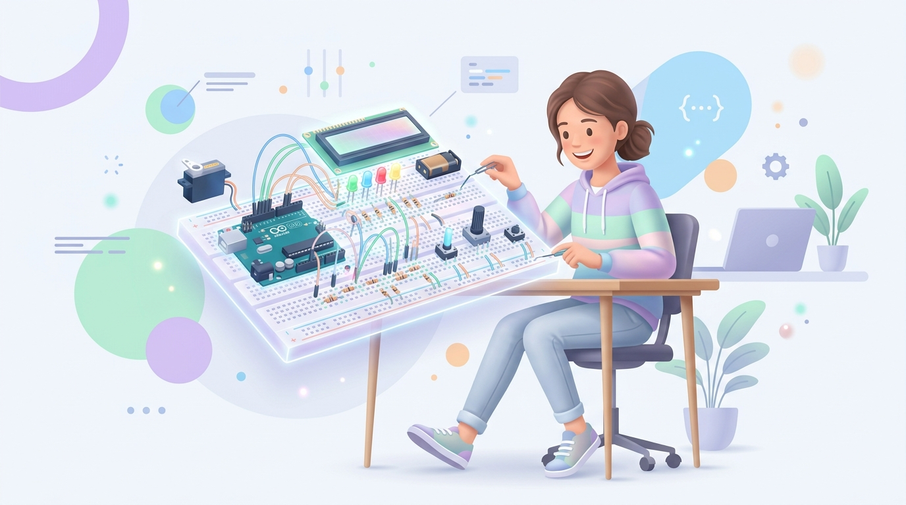
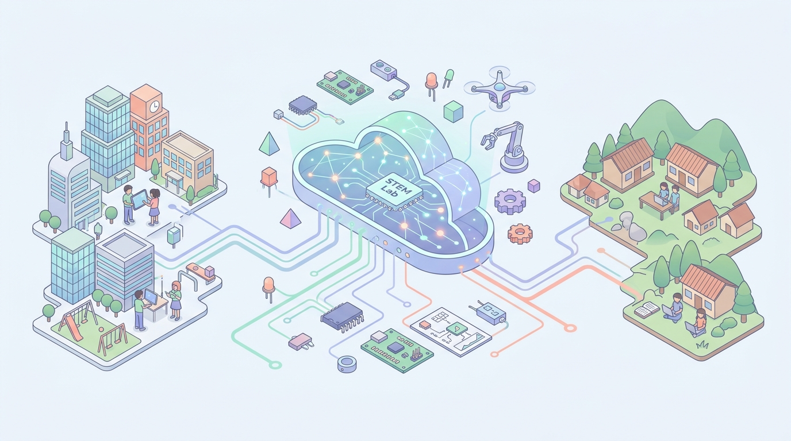

RoboLab — виртуальная STEM-лаборатория в каждом браузере
Интерактивный 2D-симулятор микроконтроллеров Arduino, ESP32 и Raspberry Pi Pico со встроенным расчётом физических законов цепи, ИИ-наставником и игровым практикумом — без закупки дорогостоящего оборудования.
Затраты школы на закупку радиодеталей и плат
Uno R3, Nano, Mega, ESP32 и Raspberry Pi Pico
AI-диагностика ошибок и защита от КЗ

Почему школьники учат STEM «в теории на бумаге»?
Острый разрыв между городскими лицеями и школами в регионах и сёлах из-за стоимости оборудования и страха поломки радиодеталей.
💸 Высокий финансовый барьер ($3 500+ на класс)
Полный комплект плат Arduino, ESP32, датчиков, сервоприводов и расходников недоступен для большинства сельских и малых школ.
⚡ Страх ошибки и выгорания компонентов
Подключение светодиода без резистора или короткое замыкание 5V на GND мгновенно сжигает реальную плату — учитель боится давать наборы детям.
👩🏫 Дефицит профильных менторов по робототехнике
В 1 классе до 30 учеников: один учитель физически не успевает проверить каждую макетную плату и найти неправильный провод.
📊 Сравнение доступности практики STEM для школьников
Экосистема RoboLab: 3 модуля в одном браузере
Работает мгновенно по ссылке без установки тяжёлых программ — одинаково доступно в мегаполисе и сельской школе.

1. Симулятор микроконтроллеров + C++ IDE
Интерактивный холст с детализированными платами (Arduino Uno R3, Nano, Mega, ESP32, Pi Pico), умной трассировкой проводов, подсветкой кода и Serial-монитором.
2. Интеллектуальный «AI Наставник RoboLab»
Проверяет схему в реальном времени, объясняет физику процесса простым языком и подсказывает, почему не горит светодиод или не крутится сервопривод.
3. Пошаговый «Практикум» (Учёба через игру)
Дорожка интерактивных уровней: сборка на мини-макетке, коммутация пинов, составление кода C++ из блоков и прокачка виртуального робота-напарника.
Безопасное право на ошибку: Закон Ома вживую
Школьник не просто смотрит анимацию — он меняет сопротивление, полярность и пины, наблюдая реальный физический отклик цепи.
🔥 Эксперимент №1: Ошибка (Без резистора / КЗ)
Что видит ученик: Визуальный эффект перегрузки, предупреждение в статусной строке и точный расчёт от AI Наставника, почему кристалл светодиода сгорел.
✅ Эксперимент №2: Верный расчёт (Резистор 220 Ом)
Формула движка: $I = (5\text{V} - 2.0\text{V}) / 220\,\Omega = 13.6\text{ мА}$. Школьник на практике понимает, зачем в цепи нужен резистор и общая земля `GND`.
Как устроен движок RoboLab изнутри?
100% вычислений выполняется прямо в браузере клиента (Zero-Latency Client Engine) — мгновенный отклик без нагрузки на сервер.
⚡ Мгновенная загрузка (< 0.5 сек)
Чистый модульный стек без тяжёлых 3D-движков позволяет работать даже на школьных нетбуках 10-летней давности.
🔌 Честная проверка топологии цепи
Алгоритм графа проверяет замкнутость контура, наличие общей земли `GND`, номиналы резисторов и соответствие пинов в коде C++.
🔒 Безопасность и верификация
Двухфакторное подтверждение регистрации по 6-значному OTP-коду, вход через Google и мгновенный Демо-режим для жюри.
Интерактивный «Практикум»: от нуля до первой схемы за 10 минут
Увлекательная игровая механика превращает сложную схемотехнику в понятный квест с мгновенной обратной связью.
🛠️ 1. Сборка на мини-макетке
Ученик выбирает радиодетали из банка и ставит их в разрыв цепи. Если поставить прямую перемычку вместо резистора — сработает детектор КЗ!
🔌 2. Коммутация выводов МК
Интерактивное соединение пинов датчиков (`VCC`, `TRIG`, `ECHO`, `GND`) с ответными портами платы Arduino Uno.
💻 3. Сборка прошивки C++
Составление реального скетча Arduino (`pinMode`, `digitalWrite`, `pulseIn`, `Servo.write`) из интерактивных блоков кода.
🔋 Заряд АКБ вместо «жизней»
Каждое короткое замыкание разряжает виртуальный аккумулятор — это приучает проверять полярность перед подачей питания.
🤖 Прокачка робота-напарника
За успешную сборку схем начисляются «Вольты ⚙️», на которые ученик открывает кибер-визор, антенну телеметрии и плазменное ядро.
🏆 Ежедневные квесты и Лига
Квесты «Собрать цепь без КЗ» и таблица лидеров мотивируют школьников из разных регионов соревноваться в инженерных навыках.
Почему школы и ученики выбирают RoboLab?
Сравнение с зарубежными песочницами и традиционными физическими наборами робототехники.
| Критерий сравнения | 🚀 RoboLab (Наше решение) | Tinkercad Circuits | Wokwi Simulator | Физические наборы |
|---|---|---|---|---|
| Стоимость для школы / ученика | Бесплатно (0 ₸ старт) | Бесплатно | Freemium ($7/мес) | От 45 000 ₸ за 1 набор |
| Встроенный AI Наставник (разбор багов цепи) | ✅ Да (чат + авто-диагностика) | ❌ Нет | ❌ Только платный AI | ❌ Только учитель |
| Пошаговый игровой «Практикум» с нуля | ✅ Да (дорожка уровней + квесты) | ❌ Только пустой холст | ❌ Нет (для профи) | ⚠️ Бумажные методички |
| Наглядная физика КЗ и сгорания без резистора | ✅ Да (дым + расчёт тока мА) | ⚠️ Малозаметный значок | ❌ Игнорирует номинал R | 💥 Деталь сгорает навсегда |
| Работа на слабых школьных ПК и локализация | ✅ Легковесный SVG (RU/KZ) | ⚠️ Тяжёлый 3D/WebGL | ⚠️ Англоязычный | — |
Масштабирование на весь Казахстан и СНГ
От одного сельского класса до национальной облачной платформы практического STEM-образования.
🌍 TAM — Центральная Азия и СНГ
22 000+ школБолее 12 млн школьников, нуждающихся в доступных цифровых лабораториях физики и робототехники.
🇰🇿 SAM — Школы и STEM-центры РК
7 800+ школ3.8 млн учащихся в Казахстане, включая 5 200+ сельских и малых школ без полного комплекта оборудования.
🎯 SOM — Цель на первые 12 месяцев
150 школ • 25 000 детейПилотное внедрение через конкурсы робототехники, IT-хабы и школьные кружки информатики.
💼 Социально-устойчивая модель (Freemium + B2B/B2G)
Полный доступ к симулятору 5 плат, базовым проектам, AI Наставнику и модулю «Практикум».
Кабинет учителя, автоматическая проверка домашних схем всего класса, экспорт ведомостей и подготовка к олимпиадам (в 100 раз дешевле закупки железа!).
Брендированные олимпиадные треки и отбор талантливых ребят из регионов.
Живое демо RoboLab MVP: 3 сценария за 30 секунд
Члены жюри могут протестировать платформу прямо со своих устройств в 1 клик через «⚡ Быстрый гостевой вход для жюри».
Запуск схемы и кода C++
Открываем симулятор, выбираем проект (Blink, Сервопривод SG90 или Радар HC-SR04), нажимаем «▶ Запустить» и меняем параметры датчиков прямо на холсте.
Тест ошибки и AI Наставник
Нажимаем кнопку «⚠️ Тест ошибки» — видим срабатывание защиты от перегорания и получаем мгновенный разбор ошибки от AI Наставника.
Интерактивный «Практикум»
Переходим во вкладку «🎓 Практикум», собираем цепь со светодиодом и резистором 220 Ом на макетке и прокачиваем робота-напарника.
🚀 Готовы показать рабочий продукт в действии!
Нажмите кнопку справа, чтобы переключиться в интерфейс лаборатории RoboLab для живого показа жюри.
RoboLab — открываем мир инженерии каждому школьнику!
Соответствие всем требованиям WIT Teens Challenge 2026 и чёткий план развития продукта после финала.
👩💻 Наша команда и вклад на хакатоне
- • Капитан команды (Product & Frontend Lead): Архитектура платформы, UI/UX дизайн, разработка интерактивного модуля «Практикум» и защита проекта.
- • Физический движок и Схемотехника: Моделирование 16 SVG-компонентов (Uno, Nano, Mega, ESP32, Pico), расчёт Закона Ома и детекция КЗ.
- • Интерпретатор C++ и AI Наставник: Парсер кода Arduino, эмуляция периферии и система интеллектуальной диагностики ошибок.
🗺️ Дорожная карта развития (Roadmap 2026–2027)
- ✅ Сентябрь 2026 (Хакатон MVP): 5 плат МК, 11 датчиков, интерпретатор C++, AI Наставник, 2FA-авторизация и игровой «Практикум».
- 🚀 Q4 2026: Полная локализация на казахский язык (Қазақ тілі) + панель учителя для проверки заданий всего класса.
- 🌐 2027 год: Совместная сборка схем в реальном времени (Multiplayer Lab) и запуск в 150+ школах Казахстана.
💬 Готовые ответы на возможные вопросы жюри (шпаргалка для защиты):
О: Весь движок расчёта цепей и C++ работает локально в браузере (50+ FPS) и после загрузки страницы не требует постоянного канала связи.
О: RoboLab даёт 90% базы схемотехники и кода без затрат, а когда ученик переходит к реальной плате — он уже не сжигает её.
О: Бесплатный доступ для учителей информатики и физики + проведение онлайн-олимпиад по схемотехнике на базе нашего «Практикума».